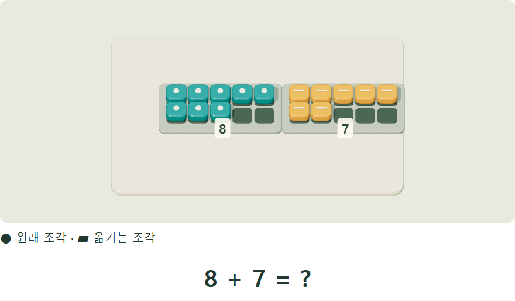

수는, 펼치면 쉬워진다.
7에서 2를 옮겨 10을 만들어요. 남은 5를 더하면?
넘버스 매직 · 수의 마법전체 프로그램 보기 새 창

7에서 2를 옮겨 10을 만들어요. 남은 5를 더하면?
독쌤의 교육 철학
어려운 수를 내가 다루기 쉬운 수로 펼치고,
보이지 않는 도형을 직접 움직여 확인하고,
실험하기 전에 먼저 예상해 봅니다.
알게 된 원리를 다른 문제에 쓰고,
왜 그렇게 생각했는지 내 말로 설명하는 공부.
독쌤과 지필드가 만들어 가는 배움입니다.
넘버스에 담긴 철학 읽기 새 창교과 연산과 창의 연산, 문장제를 잇는 넘버스 매직.
넘버스 매직 살펴보기 새 창쌓기·접기·회전에서 활동지로 이어지는 지오메트리.
지오메트리 살펴보기 새 창예상·조작·관찰을 연결하는 지필드 사이언스.
지필드 사이언스 살펴보기 새 창